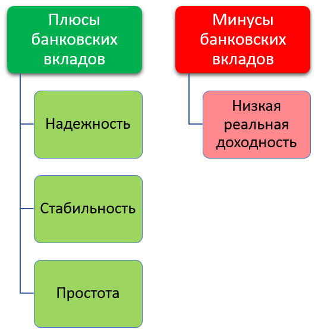

Welcome to Profitable Deposit Perth
How the Most Profitable Banks Price Their Deposit Products | CenterState Correspondent Bank
2020.12.04 10:01
Jump to navigation Resources: signup | login Products & Services Converge Insight International Services Capital Markets Clearing & Cash Management Commercial Banking Services De Novo ARC Program SmartBiz Loan Command Resource Center Research & Strategy News & Events Blog Events About Us Contact Us Market Commentary Search
You are here
Home › Blogs › Banking ›How the Most Profitable Banks Price Their Deposit Products
Pricing any deposit product breaks down into two distinct categories. There are the technical aspects of pricing your deposits to optimize volume, duration, and convexity and then there are aspects of marketing economics. Masters of deposit pricing must understand both. While we have often covered the technical aspects in the past ( HERE and HERE , for example), in this article we highlight the more important dimensions of marketing economics. Below, we underscore eight aspects of deposit pricing that successful chief deposit officers must understand first before setting pricing. Get the marketing economics right, and the technical aspect of deposit pricing takes care of itself.
The Complicated World of Deposit Pricing
The truth is, deposit pricing is one of the most complex economics exercises. Unfortunately, most bankers view deposit pricing as easy and underestimate the impact of their actions on the value of an account or product line.
Consider that when you sell a widget, it remains a widget no matter what happens to the buyer or the environment. However, when you sell a checking account, the value of that account, to both the customer and the bank, changes over time. Add increasing in interest rates, more branches, more marketing, better service or a hundred of other items, and the duration, volume and convexity change which impacts the value of the account. Below are the eight areas that affect the economic value of a deposit:
Rate: Setting the rate of a deposit is the most obvious aspect of deposit pricing. What is not so obvious is the cross-correlations of one deposit account to another. Change the interest rate on your money market account and the value changes on your checking account and certificates of deposits (CDs). Further, set your pricing too high and you likely change borrower behavior impacting not just product profitability but relationship profitability as well. Similar to loan pricing, setting a deposit’s rate should be the last step in the pricing process not the first. Price is what you rely on when you can’t change the other six aspects of deposit pricing.
Structure: The expected maturity, early withdrawal, access, fees, tiering, insurance, and service level have the most direct influence on rate and value. A health savings account or retirement account is valuable to both the bank and the customer not because of rate, but because of structure. A checking account is more valuable than a CD precisely because of the structure and not because of rate. When designing deposit products getting the structural aspects in line with your goals is the single most important thing you can do to add value to your bank franchise.
Bank and Product Brand: Next to structure, the bank’s and product’s brand has the largest influence on the deposit’s value. While most bankers understand how the brand of the bank plays into deposit value, many community banks overlook the role of a deposit product’s brand. Capital One, for example, not only attracts deposits because of their bank’s brand, but their 360 Degree account branding carries equal and often greater weight in some markets. The same can be said for PNC’s Virtual Wallet. If your marketing dollars are effectively used in investing in the brand, then some structural elements can be overlooked, and rate becomes irrelevant.
Competition and Positioning: The competitive aspects of a deposit have an inverse relationship on pricing and value. Increase competition and all other aspects of pricing being held constant, pricing will have to increase. Conversely, hold pricing constant and brand, service, access or other combination will need to increase to hold volume and performance stable. The less you spend on branding and structure, the more you will have to spend on pricing should competition increase.
Branch and Technology Structure: These two aspects of deposit pricing boil down to ease of access. Have a large branch network and/or easy technology access like Bank of America or Wells Fargo, and you can afford to pay a lower rate on your deposits. By extension, the fewer branches you have, the more your bank needs to invest in technology, brand, and structure if it does not want to increase the rate to attract greater deposit balances.
Cost: The eighth aspect of deposit pricing is cost. While many teach setting your deposit fees and interest rates to cover your costs, this really can lead you into trouble and should only impact deposit pricing in an indirect manner. “Cost plus pricing” is treating a deposit like a widget which it is not. In our opinion, the cost has little to do with pricing and should be your last consideration. For clarity, it may matter if you offer a particular deposit product or not, and it may matter what you spend on items such as marketing, your branch network or structure, but this should not be a material consideration. Of course, you want to cover the cost, but your customer could care less about your cost structure. Deposit pricing is a function of optimizing volume and performance given a level of resource constraints. If those resource constraints exceed the deposit’s value, then your bank either needs to find a way to reduce those resource expenditures or remove itself from that line of business. From a mathematical standpoint, If you need to pay 1.25% to attract deposits and it costs 1.50% in rate and overhead expenses, then it doesn’t matter if you pay 1.00% or 0.75% because your volume (and value) is going to be zero. Practically speaking, if you still offer free checking your cost per account is likely higher than the value you receive. In this case, how does your cost factor in? Again, you might decide to do away with free checking, but you certainly can charge a fee as then it is no longer free and it becomes a different type of account.
Calculating Attribution
The interesting thing about deposits is banks can track attribution and cost sensitivities (also called elasticities). Hold everything else constant and increase deposit marketing and you can observe what happens to volume (and hence value). Below are two representative banks and the attribution that each aspect of pricing plays. Higher cost banks often create a deposit base that is more sensitive to rate while lower cost banks have deposit bases that are more sensitive to structure, brand or channel access. Banks with more checking accounts, for example, tend to have a depositor base that is less rate sensitive and less sensitive to the number of competitors in the marketplace.
This analysis allows banks to understand where to invest resources to optimize value. Unfortunately, this calculation changes and the deposit cost elasticities that existed back in 2010 are not the same elasticities that exist this year. This is why banks that are focused on deposit-value building tend to be changing input costs in certain test markets and observing what happens to deposit performance. In this manner, banks can have an ongoing understanding of approximately where sensitives lie as the market changes.
To master deposit pricing, take a look at your eight aspects of deposit pricing and see where you might be able to optimize deposit value. Deposit product pricing encompasses many dynamic aspects that often go unappreciated by some bankers. By having a better understanding of how these aspects operate and interrelate, banks can drive tremendous franchise value compared to their competition.
Submitted by Chris Nichols on July 27, 2017
Share it
email facebook linkedin twitter google+ pinterestSearch Blog Posts!
Subscribe!
Chris NicholsChief Strategy Officer at CenterState Bank, Chris Nichols is an active bank investor, entrepreneur and lover of quantified banking. Chris and the team at CenterState Bank are out to highlight in this blog the best of community bank performance.
Related Posts
The Impact To ROE Of Various Bank Budget Initiatives 10 Important Pieces of Data Banks Need To Collect On Commercial Customers Now Is The Time To Segment Deposits By Elasticity 5 Popular Economic Indicators Banks Use That Are Unreliable 4 Indicators that Help Banks Forecast The FutureRecent Posts
5 Skills We Learned In a Recent Remote Selling and Coaching Training Commercial Lender Compensation for Fee Income Managing CRE Risk - What Will Happen to Office Space? Why Its Time For A Hedge Program At Your Bank A New Skill For Bankers - Selling, Leading, and Learning RemotelyCategories
BankingArchives
November 2020 (8) October 2020 (6) September 2020 (7) August 2020 (10) July 2020 (9) June 2020 (10) more “This commentary on this blog reflects the personal opinions, viewpoints, and analysis of the author and not CenterState Bank. This blog is only intended to provide general education about the banking industry, leadership, risk management, and other related topics and is not intended to provide any specific recommendations. Banks should consult their professionals and fully explore any opportunity and risk referenced herein.”Correspondent Division
Corporate Profile
Core Values
Management Team
Products & Services
Capital Market Services Clearing & Cash Management Commercial Banking Services Converge De Novo Insight International Services
News & Events
Events Bond School CenterState Banks, Inc. Annual Report Financial Highlights - Reg F Press ReleasesAbout Us
Correspondent Division Corporate Profile Core Values Management Team Contact Us A Message from Our CEOResearch & Strategy
Market Commentary Rates BlogConnect with us:
South State Bank and CenterState Bank, N.A. have merged to become South State Bank, N.A. Please visit bankingforward.com to learn more.
Home | Equal Housing Lender | Member FDIC | Privacy & Legal | Accessibility | Site Map
©2020 CenterState Bank Correspondent Division. All rights reserved.
powered &designed by
